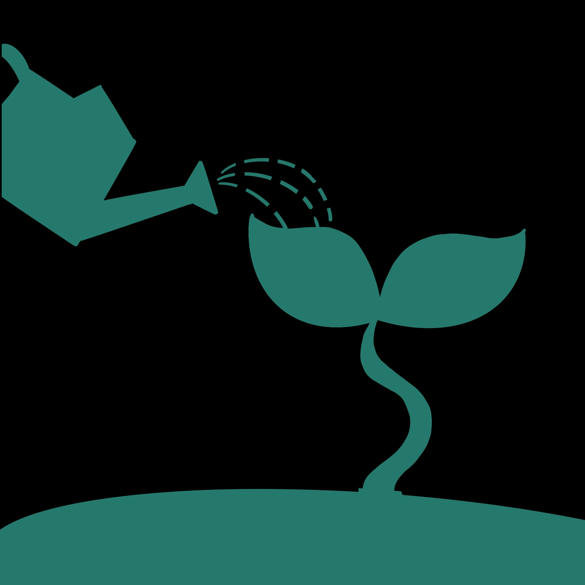

Recorded Values
Core behavioral dimensions. Click to explore.
Altruism
Altruism measures your willingness to help others without expecting returns. Includes volunteering, mentoring, helping neighbours, etc.
Civic Engagement
Civic Engagement reflects participation in public matters like voting, meetings, and justice actions.
Environment

Environment involves actions for sustainability, resource conservation, and anti-pollution.
Collaboration
Collaboration evaluates teamwork and co-creation performance.
Language
Language reflects multilingual ability and inclusive communication.